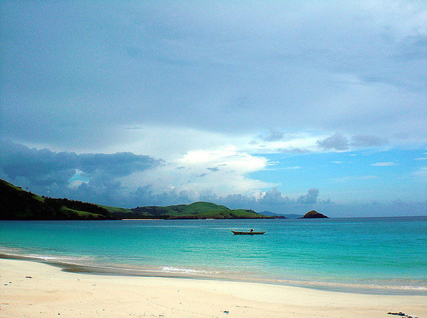
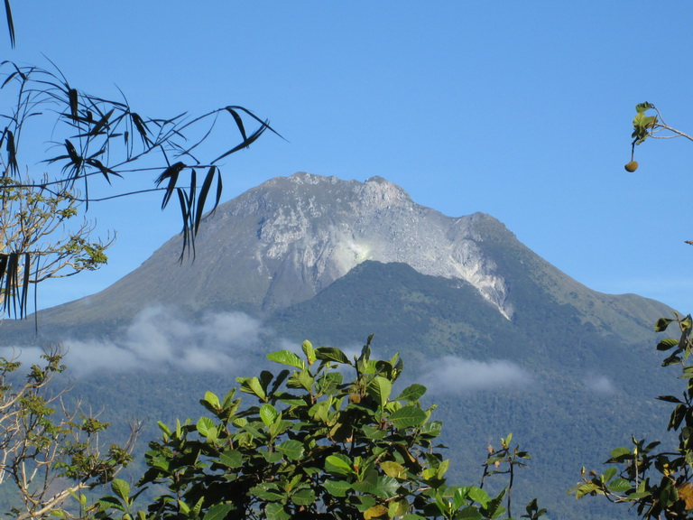
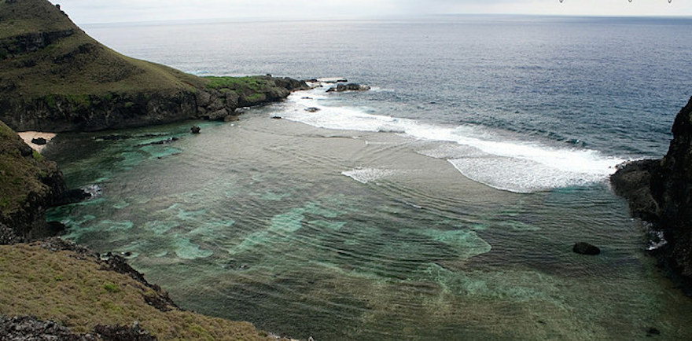
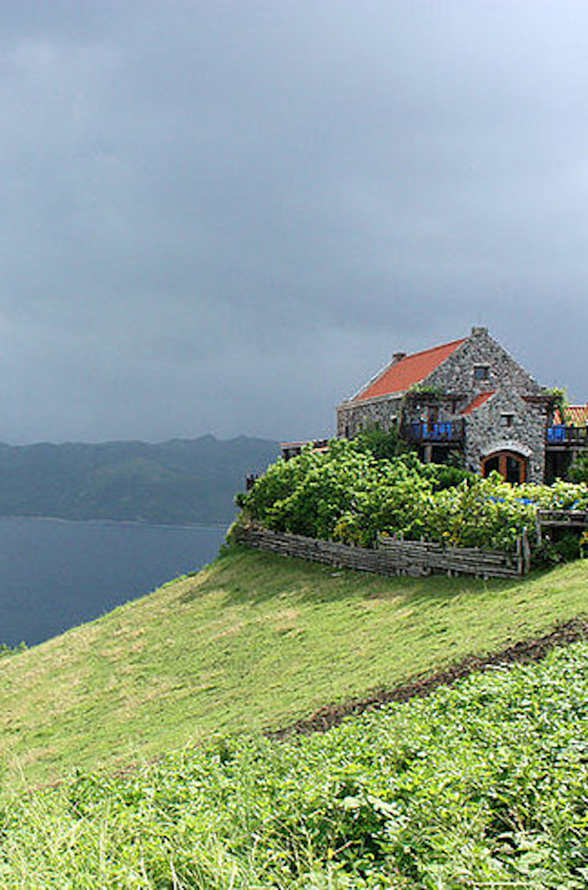
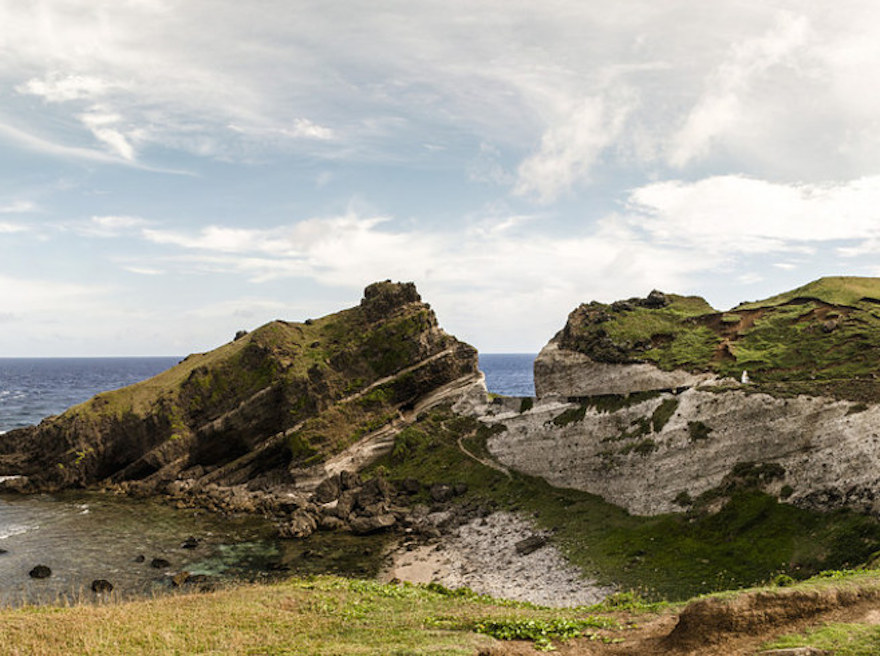
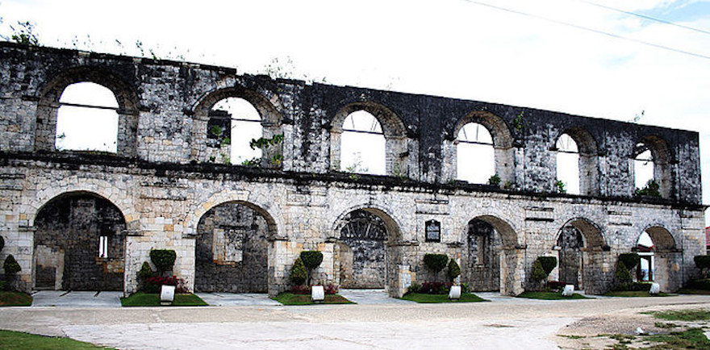
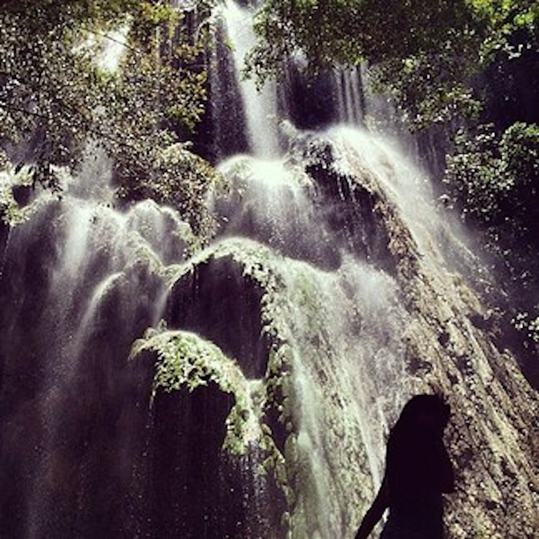
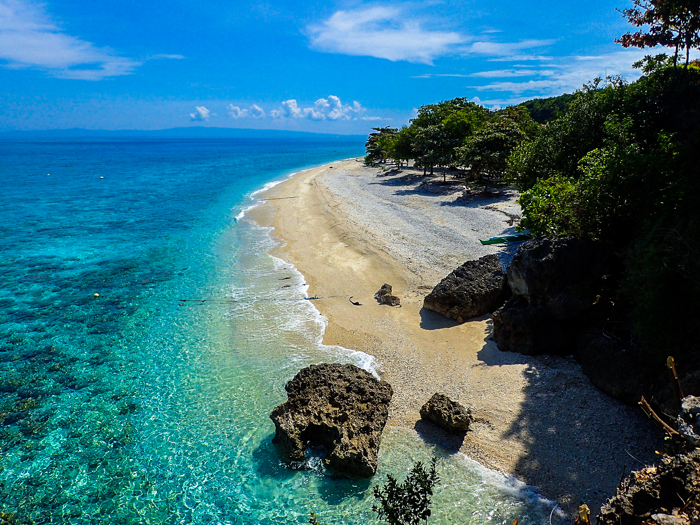
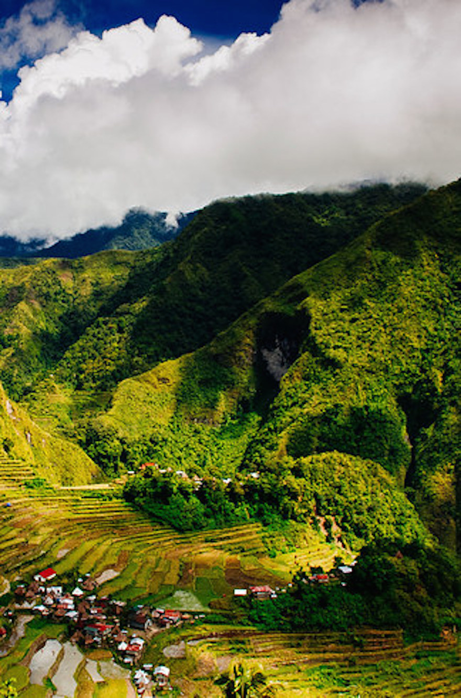
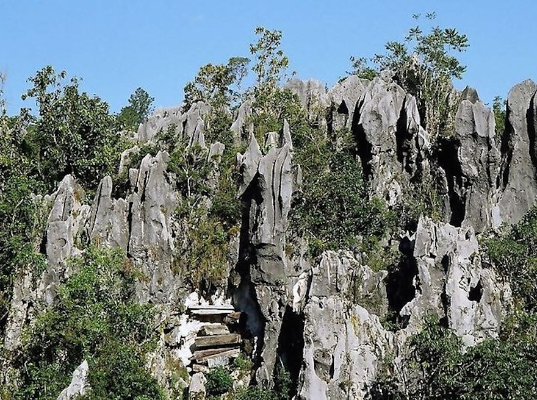

If you are lucky enough to travel to the Philippines, you are lucky enough! Located in Southeast Asia in the western Pacific Ocean, this beautiful island country has so much splendor to offer. If you are looking for a serene place to clear your mind and do some soul-searching, the Philippines offers plenty of options. Here are 10 of the top beautiful places in the Philippines to go soul-searching.
The Calaguas is a group of islands in the province of Camarines Norte that includes 3 major islands and several minor islands. If you are looking to escape the main islands you should head to Calaguas Island, which is one of the lesser-known beaches in the Philippines. Campers and backpackers enjoy the well-maintained powdery white sand beaches found here. Camarines Norte is equally stunning, albeit more crowded, just like the other main islands–Vinzons and Paracale.


Mount Apo is the tallest mountain in the Philippines, reaching over 9,000 feet in elevation. Views from the top overlook the cities of Digos and Kidapawan. You can hike the mountain, or simply enjoy views from the bottom while eating deliciously fresh seafood and durian.


A number of devastating storms have battered Batanes Island, but this province still stands today. Located on the extreme northern edge of the Philippines, Batanes is the least populated province but it remains one of the most beautiful.
  This beautiful destination has everything to offer. You can swim with whale sharks, bask on the pristine beaches, ponder life looking at tranquil waterfalls, explore historical ruins, and so much more.
  5. Sagada
You must take a long bus ride up a mountain in order to reach the beautiful place that sits above the clouds, known as Sagada. Gazing down at the world from above the clouds is a pretty superior way to go soul searching.
Sagada, as well as all of the municipalities located in Mountain Province, offer a lot of fun adventures for travelers to embark on. Warning: While visiting, you may feel inclined to buy large hoards of rice and coffee.
 